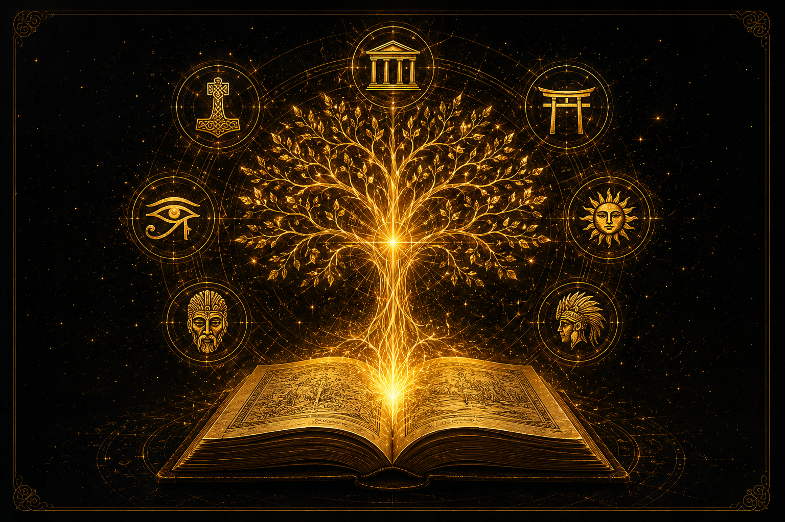
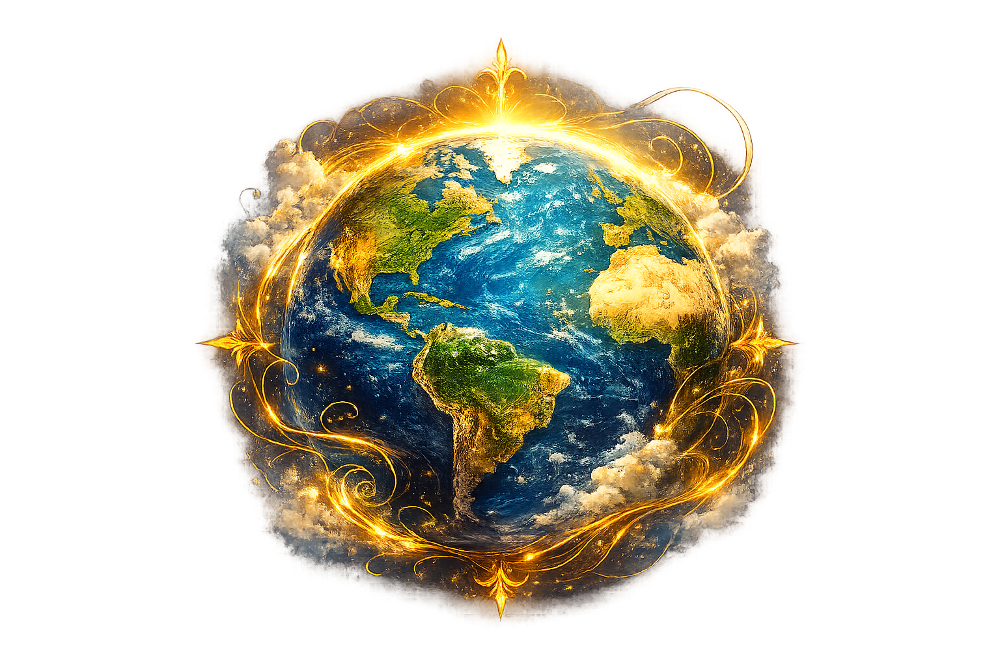
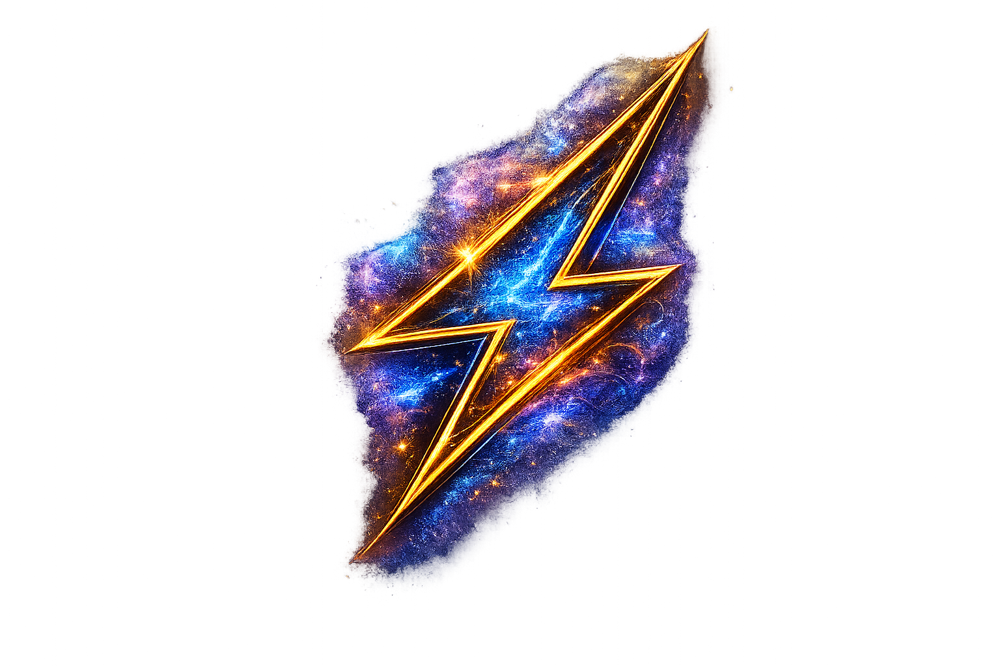
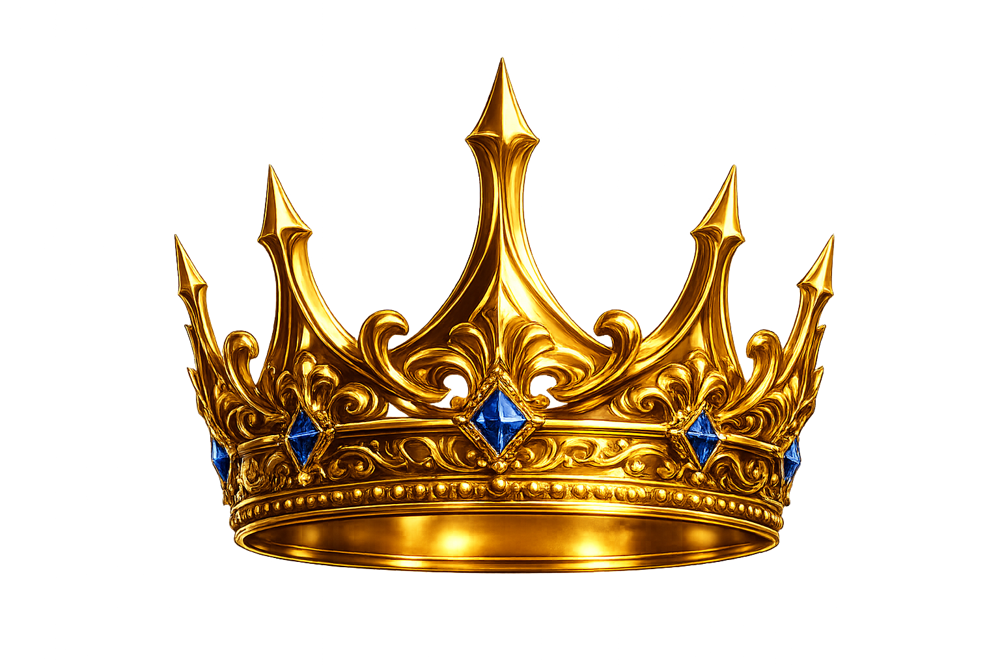
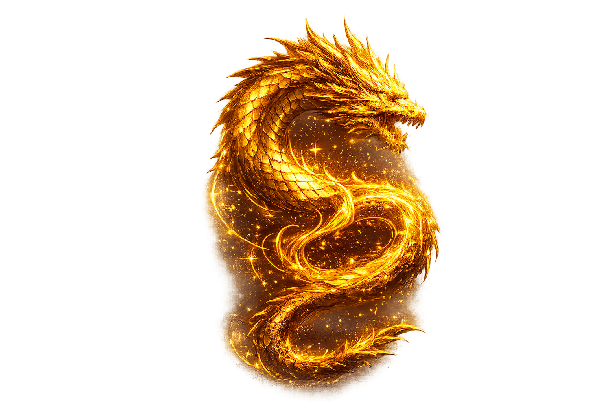
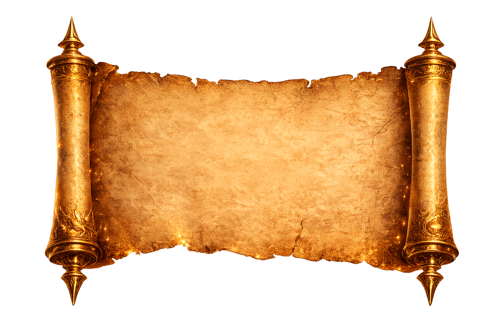

Mitologias
Histórias que moldaram civilizaçõesDeuses, heróis, criaturas lendárias e mitos que atravessam gerações. Explore as principais mitologias do mundo e descubra a sabedoria de cada cultura.
A jornada das mitologias através da história
Explore o surgimento aproximado das principais tradições mitológicas ao longo dos séculos.
O que são mitologias?
Mitologias são conjuntos de histórias, lendas e tradições criadas pelos povos para explicar os grandes mistérios da existência.
Cada civilização desenvolveu suas próprias narrativas para explicar fenômenos naturais, a origem dos povos e a relação entre humanos e o sagrado.
Nessas narrativas surgem deuses, heróis, criaturas fantásticas e seres sobrenaturais que representam valores, medos, sonhos e ensinamentos transmitidos ao longo das gerações.


A origemdo mundo

Fenômenosda natureza

Deusese heróis

Criaturaslendárias

Sabedoriaancestral
Explore as mitologias pelo mundo
Gire o globo e descubra onde nasceram as histórias, deuses, criaturas e lendas das grandes civilizações.
- Mitologias Europeias
- Mitologias Asiáticas
- Mitologias Africanas
- Povos Indígenas das Américas
- Mitologias Oceânicas
- Civilizações Mediterrâneas
- Tradições Religiosas
Toque ou passe o mouse sobre os pontos para descobrir a origem de cada mitologia.
Explore as mitologias
Viaje por tradições antigas, deuses, heróis, criaturas lendárias e símbolos sagrados de diferentes povos do mundo.